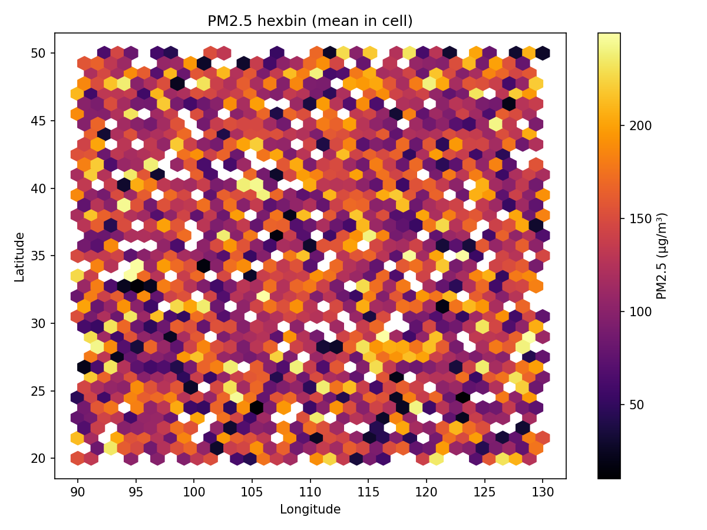
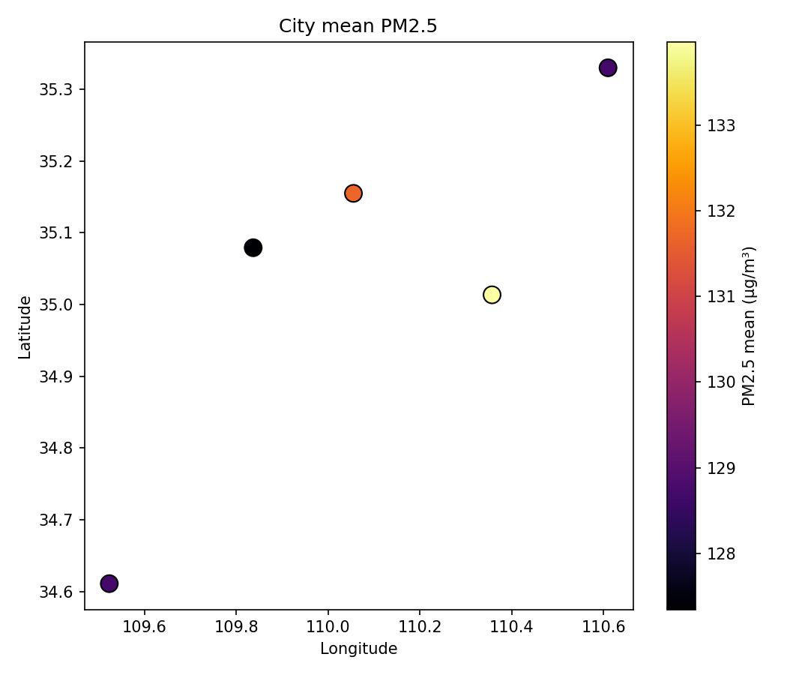
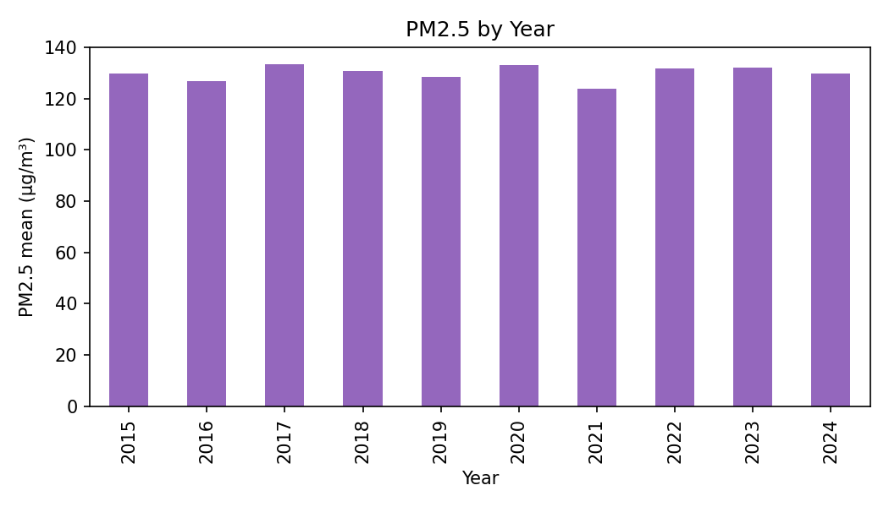
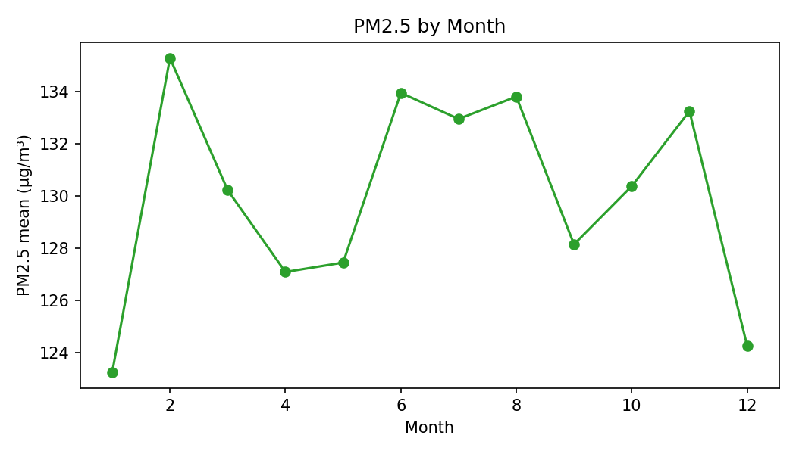
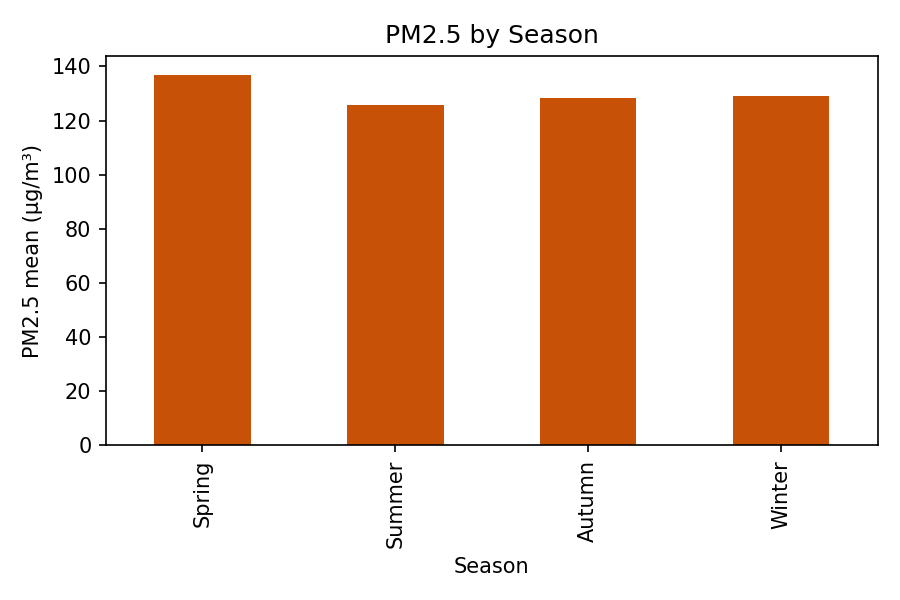

Environmental Quality Report
Summary (EDA)
=== BASIC INFO ===
Rows: 3000 Cols: 24
Columns: ['PM2.5 (µg/m³)', 'PM10 (µg/m³)', 'NO2 (µg/m³)', 'SO2 (µg/m³)', 'CO (mg/m³)', 'O3 (µg/m³)', 'Temperature (°C)', 'Humidity (%)', 'Wind Speed (m/s)', 'Wind Direction (°)', 'Pressure (hPa)', 'Precipitation (mm)', 'Visibility (km)', 'AQI', 'Season', 'City', 'Latitude', 'Longitude', 'Day of Week', 'Hour', 'Month', 'Year', 'Weather Condition', 'Station ID']
=== MISSING VALUES PER COLUMN ===
PM2.5 (µg/m³): 0
PM10 (µg/m³): 0
NO2 (µg/m³): 0
SO2 (µg/m³): 0
CO (mg/m³): 0
O3 (µg/m³): 0
Temperature (°C): 0
Humidity (%): 0
Wind Speed (m/s): 0
Wind Direction (°): 0
Pressure (hPa): 0
Precipitation (mm): 0
Visibility (km): 0
AQI: 0
Season: 0
City: 0
Latitude: 0
Longitude: 0
Day of Week: 0
Hour: 0
Month: 0
Year: 0
Weather Condition: 0
Station ID: 0
=== COORDINATE BOUNDS CHECK (China bbox) ===
Outside bbox count: 0 (0.00%)
Latitude range: 20.0050 to 49.9989
Longitude range: 90.0065 to 129.9893
=== TOP 10 CITIES BY ROW COUNT ===
Beijing: 629
Chengdu: 598
Shanghai: 596
Shenzhen: 593
Guangzhou: 584
=== TIME COVERAGE ===
Year: unique=10 sample=['2015', '2016', '2017', '2018', '2019', '2020', '2021', '2022', '2023', '2024']
Month: unique=12 sample=['1', '10', '11', '12', '2', '3', '4', '5', '6', '7']
Hour: unique=24 sample=['0', '1', '10', '11', '12', '13', '14', '15', '16', '17']
Season: unique=4 sample=['Autumn', 'Spring', 'Summer', 'Winter']
Day of Week: unique=7 sample=['Friday', 'Monday', 'Saturday', 'Sunday', 'Thursday', 'Tuesday', 'Wednesday']
=== POLLUTANT SUMMARY (count, mean, p50, p95, min, max) ===
PM2.5 (µg/m³): count=3000, mean=130.073, p50=128.858, p95=237.605, min=10.039, max=249.847
PM10 (µg/m³): count=3000, mean=158.818, p50=157.175, p95=285.707, min=20.017, max=299.702
NO2 (µg/m³): count=3000, mean=52.949, p50=53.405, p95=94.482, min=5.005, max=99.980
SO2 (µg/m³): count=3000, mean=25.426, p50=25.677, p95=47.359, min=1.015, max=49.990
CO (mg/m³): count=3000, mean=2.563, p50=2.554, p95=4.746, min=0.102, max=4.999
O3 (µg/m³): count=3000, mean=105.613, p50=106.706, p95=190.024, min=10.095, max=199.936
Pollutant Summary (preview)
| pollutant | count | mean | p50 | p95 | min | max |
|---|
| PM2.5 (µg/m³) | 3000 | 130.07274240079397 | 128.85817222106783 | 237.60470091123608 | 10.039019416025043 | 249.8474730741296 |
| PM10 (µg/m³) | 3000 | 158.81839774077486 | 157.17472308785415 | 285.7072409176678 | 20.017134016581227 | 299.70229261089287 |
| NO2 (µg/m³) | 3000 | 52.94869661413674 | 53.40487858824612 | 94.48171948807381 | 5.005046875086433 | 99.97951129085969 |
| SO2 (µg/m³) | 3000 | 25.42612660699014 | 25.677423364402216 | 47.35885554529559 | 1.0146934222912058 | 49.98985020662516 |
| CO (mg/m³) | 3000 | 2.562513755457297 | 2.5537782720599758 | 4.746009712666546 | 0.10220708527835294 | 4.9986584350286005 |
| O3 (µg/m³) | 3000 | 105.61336529710772 | 106.70630226121743 | 190.0239273641853 | 10.09455149821186 | 199.93638695822668 |
Alerts (preview)
| City | Latitude | Longitude | Season | Hour | Month | Year | Station ID | PM2.5 (µg/m³) | Severity | Threshold |
|---|
| Shanghai | 48.629079983871776 | 105.23830183770646 | Spring | 17 | 11 | 2017 | 18 | 194.1747895640595 | severe | 150.0 |
| Beijing | 40.353740227395505 | 99.195909627058 | Spring | 3 | 12 | 2020 | 47 | 204.12792850538222 | severe | 150.0 |
| Chengdu | 25.37284879493256 | 112.82186746893433 | Autumn | 4 | 8 | 2021 | 39 | 187.23478969579338 | severe | 150.0 |
| Chengdu | 48.273093098316316 | 109.44260439419068 | Spring | 15 | 2 | 2022 | 17 | 160.4409812087023 | severe | 150.0 |
| Shanghai | 28.095013012670883 | 106.97246278943412 | Summer | 20 | 8 | 2022 | 96 | 164.42763482585485 | severe | 150.0 |
| Chengdu | 43.59028410981889 | 98.31149456022476 | Summer | 20 | 5 | 2015 | 12 | 219.3539940376757 | severe | 150.0 |
| Chengdu | 28.696484829769613 | 120.17655989051596 | Winter | 17 | 12 | 2018 | 28 | 227.24072653687776 | severe | 150.0 |
| Chengdu | 38.110244917529656 | 129.98928438486476 | Summer | 19 | 7 | 2017 | 32 | 205.86197831319862 | severe | 150.0 |
| Shenzhen | 45.062743903057836 | 95.43307925372804 | Summer | 22 | 12 | 2022 | 92 | 190.40995388137725 | severe | 150.0 |
| Shanghai | 30.89127140648756 | 115.52612235226084 | Spring | 5 | 2 | 2017 | 27 | 180.39649408582991 | severe | 150.0 |
| Shanghai | 24.045612374897956 | 91.58944712840317 | Summer | 8 | 6 | 2016 | 36 | 190.07566976910482 | severe | 150.0 |
| Shanghai | 39.98723436461303 | 96.9288476965019 | Summer | 5 | 10 | 2024 | 87 | 225.41916047768126 | severe | 150.0 |
| Guangzhou | 49.33192263357289 | 107.2439836438384 | Winter | 19 | 9 | 2022 | 38 | 203.06389558449254 | severe | 150.0 |
| Chengdu | 31.430294509344225 | 124.86994032115626 | Spring | 6 | 2 | 2024 | 17 | 167.26447948943442 | severe | 150.0 |
| Shenzhen | 49.99769403840985 | 93.25673395484662 | Autumn | 0 | 4 | 2015 | 51 | 243.1505614719994 | severe | 150.0 |
| Beijing | 34.1376353069701 | 97.67730401096613 | Autumn | 16 | 9 | 2024 | 10 | 246.35541950198206 | severe | 150.0 |
| Beijing | 22.296400855296703 | 107.53619888379367 | Winter | 3 | 10 | 2020 | 42 | 199.16681073336397 | severe | 150.0 |
| Guangzhou | 37.958693464725144 | 112.09564170935549 | Autumn | 7 | 11 | 2018 | 56 | 248.47049148521538 | severe | 150.0 |
| Beijing | 21.12170438693412 | 99.99467561233766 | Winter | 4 | 3 | 2019 | 70 | 207.19204835359685 | severe | 150.0 |
| Guangzhou | 28.656509265583615 | 125.28817272643889 | Autumn | 22 | 7 | 2016 | 22 | 187.33323492966514 | severe | 150.0 |
| Shanghai | 35.154204531212876 | 115.00911804021692 | Summer | 22 | 3 | 2024 | 94 | 235.01687231353588 | severe | 150.0 |
| Guangzhou | 48.5914919157556 | 118.51397244337953 | Autumn | 5 | 7 | 2020 | 80 | 178.47723001196522 | severe | 150.0 |
| Shanghai | 27.609262680931085 | 120.29471250400711 | Spring | 16 | 9 | 2015 | 12 | 170.3825051825374 | severe | 150.0 |
| Chengdu | 38.097940448760525 | 124.5474044389681 | Summer | 5 | 4 | 2023 | 28 | 158.83605315239876 | severe | 150.0 |
| Shenzhen | 20.415410299068483 | 129.08455564506122 | Autumn | 8 | 1 | 2022 | 43 | 216.16815307873085 | severe | 150.0 |
| Chengdu | 37.927293940569754 | 127.26844094666316 | Winter | 21 | 12 | 2017 | 27 | 216.46575992555734 | severe | 150.0 |
| Chengdu | 30.699268355343097 | 116.05226240166718 | Spring | 15 | 12 | 2019 | 19 | 204.21898819146514 | severe | 150.0 |
| Beijing | 22.178398049547138 | 118.8027719640865 | Summer | 1 | 1 | 2021 | 4 | 183.6879725841295 | severe | 150.0 |
| Chengdu | 27.05507244698385 | 115.25312519569937 | Autumn | 6 | 11 | 2022 | 72 | 218.4020042585645 | severe | 150.0 |
| Chengdu | 43.482224442923936 | 112.9278390130966 | Autumn | 18 | 11 | 2019 | 93 | 216.7564883062043 | severe | 150.0 |
| Shenzhen | 36.455065958024676 | 102.75265335129438 | Spring | 2 | 1 | 2020 | 99 | 237.6452908537273 | severe | 150.0 |
| Shanghai | 22.542786077346957 | 91.71431414349082 | Summer | 0 | 4 | 2018 | 50 | 184.8752032244357 | severe | 150.0 |
| Shenzhen | 24.040870506804787 | 114.71324105037966 | Winter | 19 | 3 | 2018 | 43 | 157.30886635600544 | severe | 150.0 |
| Shenzhen | 27.879898990786316 | 109.92100597736618 | Spring | 11 | 5 | 2016 | 96 | 151.17307467542037 | severe | 150.0 |
| Beijing | 36.94297372696995 | 127.86369880760451 | Summer | 1 | 11 | 2018 | 88 | 217.15810783358424 | severe | 150.0 |
| Chengdu | 47.359001861243875 | 112.76424593009905 | Autumn | 3 | 3 | 2019 | 64 | 242.4212938708892 | severe | 150.0 |
| Chengdu | 22.4263561747255 | 99.90743500559456 | Winter | 7 | 5 | 2022 | 73 | 161.94054452473245 | severe | 150.0 |
| Shanghai | 27.90393728347228 | 115.71683004773251 | Summer | 11 | 8 | 2019 | 89 | 150.22962238639232 | severe | 150.0 |
| Beijing | 40.157702202814505 | 120.39005216060654 | Summer | 22 | 1 | 2020 | 94 | 185.0073874610552 | severe | 150.0 |
| Chengdu | 24.782734575913384 | 118.01991082859315 | Summer | 4 | 9 | 2018 | 94 | 163.3265240883065 | severe | 150.0 |
| Guangzhou | 25.881204022507287 | 127.1860424509778 | Winter | 21 | 1 | 2024 | 30 | 237.2203053148448 | severe | 150.0 |
| Guangzhou | 28.984063082352126 | 126.44219998749293 | Summer | 0 | 3 | 2021 | 15 | 163.50660909708415 | severe | 150.0 |
| Shanghai | 31.81630614292483 | 95.7285647825741 | Winter | 23 | 5 | 2019 | 55 | 225.24157579490483 | severe | 150.0 |
| Chengdu | 23.83340594648749 | 91.51781738306373 | Spring | 13 | 3 | 2016 | 56 | 164.35574329971607 | severe | 150.0 |
| Beijing | 34.76273872980458 | 129.80478926817787 | Spring | 13 | 6 | 2017 | 28 | 209.81732147913047 | severe | 150.0 |
| Beijing | 31.79422439287096 | 122.04849888615003 | Winter | 10 | 7 | 2017 | 10 | 211.2446311840292 | severe | 150.0 |
| Beijing | 27.08729405574129 | 126.83087930532494 | Spring | 11 | 9 | 2020 | 49 | 202.79213080616 | severe | 150.0 |
| Shanghai | 38.58692587235198 | 128.23452419899553 | Summer | 16 | 3 | 2017 | 26 | 158.81951950143753 | severe | 150.0 |
| Guangzhou | 42.544553464187835 | 105.97183905158928 | Summer | 5 | 3 | 2024 | 40 | 190.41656180803645 | severe | 150.0 |
| Shanghai | 48.51476763870254 | 107.31595072633891 | Winter | 0 | 9 | 2016 | 66 | 223.35716552857764 | severe | 150.0 |
| Guangzhou | 45.031042032363146 | 116.21070959291517 | Spring | 16 | 7 | 2016 | 3 | 228.3474735479857 | severe | 150.0 |
| Beijing | 28.94430501110595 | 116.57019190604032 | Winter | 17 | 2 | 2023 | 18 | 249.8474730741296 | severe | 150.0 |
| Shenzhen | 25.248378347179056 | 125.91333616331312 | Summer | 19 | 10 | 2020 | 91 | 200.27792232636824 | severe | 150.0 |
| Shanghai | 42.36764803622084 | 100.41387190888693 | Autumn | 14 | 10 | 2022 | 8 | 246.96384163459052 | severe | 150.0 |
| Beijing | 23.534794542611294 | 116.48417225412067 | Spring | 22 | 4 | 2020 | 84 | 230.6455838937148 | severe | 150.0 |
| Guangzhou | 37.371034619546734 | 126.95241517277002 | Spring | 10 | 5 | 2018 | 34 | 191.64818787359349 | severe | 150.0 |
| Chengdu | 33.232106223136185 | 117.95204179664233 | Summer | 21 | 11 | 2021 | 12 | 223.04912626019353 | severe | 150.0 |
| Shenzhen | 31.880326742403795 | 127.6645211509989 | Winter | 10 | 11 | 2024 | 72 | 164.0072404322418 | severe | 150.0 |
| Beijing | 43.26371864086636 | 113.62745721455573 | Winter | 17 | 10 | 2024 | 98 | 170.74058379228765 | severe | 150.0 |
| Shanghai | 36.03484454705823 | 116.43576788210844 | Spring | 20 | 9 | 2019 | 94 | 242.5604545074412 | severe | 150.0 |
| Beijing | 42.351397484030414 | 125.70559212669045 | Summer | 3 | 12 | 2017 | 36 | 168.84668724561325 | severe | 150.0 |
| Shanghai | 39.46883436246283 | 94.83455988124804 | Winter | 9 | 10 | 2024 | 59 | 212.42225266391412 | severe | 150.0 |
| Shanghai | 32.12516826839737 | 95.60383691109027 | Summer | 22 | 7 | 2020 | 6 | 162.34242513917184 | severe | 150.0 |
| Guangzhou | 20.168807971358635 | 107.25736030842619 | Summer | 10 | 3 | 2016 | 36 | 248.87089076409683 | severe | 150.0 |
| Shenzhen | 20.925385156958143 | 113.379628434597 | Winter | 20 | 9 | 2021 | 94 | 224.51663981982827 | severe | 150.0 |
| Beijing | 30.886465037403784 | 92.45866624887877 | Summer | 19 | 7 | 2022 | 30 | 166.72035800330838 | severe | 150.0 |
| Guangzhou | 47.42306885114955 | 104.91522232035973 | Summer | 20 | 12 | 2016 | 52 | 238.28780393400464 | severe | 150.0 |
| Shenzhen | 29.873934077084357 | 102.35784258169852 | Winter | 7 | 11 | 2017 | 47 | 221.75682090400142 | severe | 150.0 |
| Beijing | 26.24761930142823 | 108.65175777311487 | Autumn | 7 | 5 | 2023 | 52 | 156.08877118432457 | severe | 150.0 |
| Shenzhen | 43.83097572980671 | 97.70642849736653 | Winter | 1 | 4 | 2020 | 1 | 246.81327157324998 | severe | 150.0 |
| Beijing | 31.794732769070627 | 115.74779797108954 | Summer | 6 | 4 | 2017 | 62 | 155.7518470073778 | severe | 150.0 |
| Chengdu | 29.16201950937772 | 114.52502893727723 | Autumn | 15 | 11 | 2015 | 15 | 232.28945636488712 | severe | 150.0 |
| Chengdu | 25.029190707930166 | 93.3420956890063 | Winter | 13 | 9 | 2020 | 73 | 190.31717932056034 | severe | 150.0 |
| Shanghai | 32.36842398447098 | 92.08679916348835 | Autumn | 19 | 5 | 2022 | 97 | 245.25127757881418 | severe | 150.0 |
| Chengdu | 22.20623285340604 | 95.60446640740393 | Winter | 0 | 6 | 2018 | 99 | 209.61249673746622 | severe | 150.0 |
| Shanghai | 48.16758135696064 | 105.29650124314044 | Summer | 8 | 8 | 2024 | 33 | 228.02784913624149 | severe | 150.0 |
| Chengdu | 44.73015018418347 | 129.2993198771314 | Spring | 8 | 11 | 2024 | 5 | 202.9458013895126 | severe | 150.0 |
| Chengdu | 48.79217935301828 | 122.61530580211031 | Spring | 15 | 7 | 2017 | 95 | 196.59548168673368 | severe | 150.0 |
| Shenzhen | 45.62938497044016 | 98.34460666016423 | Spring | 4 | 7 | 2021 | 67 | 178.86160435966522 | severe | 150.0 |
| Beijing | 39.532973648147184 | 124.51964396243923 | Summer | 15 | 10 | 2023 | 61 | 236.4829965233995 | severe | 150.0 |
| Guangzhou | 21.401307593825546 | 90.2567264993762 | Spring | 1 | 6 | 2024 | 33 | 191.439087452762 | severe | 150.0 |
| Beijing | 37.59266315592572 | 121.63844086193586 | Autumn | 18 | 8 | 2017 | 23 | 226.68177587534765 | severe | 150.0 |
| Beijing | 49.99887261652939 | 124.71012642970359 | Winter | 7 | 1 | 2022 | 96 | 201.2228989464594 | severe | 150.0 |
| Chengdu | 28.0505428435016 | 102.26624907422739 | Summer | 8 | 9 | 2015 | 77 | 155.0746814043786 | severe | 150.0 |
| Shanghai | 37.67078085879524 | 128.18368850388532 | Summer | 9 | 8 | 2018 | 85 | 204.20553644331932 | severe | 150.0 |
| Shenzhen | 32.10083772746647 | 106.79906286879276 | Winter | 2 | 10 | 2022 | 27 | 221.12606766490626 | severe | 150.0 |
| Guangzhou | 35.99407641044536 | 102.5735981953528 | Spring | 14 | 11 | 2019 | 73 | 245.5588086301127 | severe | 150.0 |
| Shenzhen | 35.204260984339186 | 104.08442465873618 | Autumn | 3 | 10 | 2017 | 2 | 178.04333852636415 | severe | 150.0 |
| Shanghai | 24.025038999437133 | 115.56727420330847 | Spring | 3 | 11 | 2020 | 86 | 204.8197474651104 | severe | 150.0 |
| Chengdu | 41.28944396749856 | 114.1837809518858 | Winter | 10 | 4 | 2016 | 16 | 200.18189342115073 | severe | 150.0 |
| Guangzhou | 29.65459940987529 | 124.97608118977641 | Spring | 19 | 4 | 2024 | 79 | 232.05997510618351 | severe | 150.0 |
| Chengdu | 24.629279761478514 | 102.3209604720104 | Spring | 11 | 3 | 2024 | 51 | 249.08974692982997 | severe | 150.0 |
| Chengdu | 37.61752353801133 | 107.2511811159029 | Autumn | 12 | 12 | 2019 | 28 | 176.6986450528571 | severe | 150.0 |
| Chengdu | 20.113413607182036 | 105.70761772231404 | Autumn | 9 | 10 | 2023 | 36 | 245.20481256018266 | severe | 150.0 |
| Chengdu | 40.02099164429741 | 119.28098409326091 | Winter | 11 | 4 | 2017 | 34 | 237.34954813740012 | severe | 150.0 |
| Shenzhen | 41.1713407089004 | 100.40599817348301 | Spring | 9 | 6 | 2021 | 26 | 164.39857871657807 | severe | 150.0 |
| Guangzhou | 37.94299059584394 | 90.37025730810807 | Autumn | 8 | 10 | 2018 | 34 | 209.71730439340294 | severe | 150.0 |
| Shanghai | 40.60379491320357 | 94.4769657666835 | Autumn | 8 | 3 | 2018 | 7 | 235.50375791926763 | severe | 150.0 |
| Beijing | 44.43764026406161 | 94.68153465884305 | Autumn | 11 | 8 | 2016 | 56 | 163.79106982413543 | severe | 150.0 |
| Shanghai | 47.09092874085807 | 103.60889669607587 | Winter | 11 | 2 | 2022 | 5 | 204.19645007295 | severe | 150.0 |
Figures




